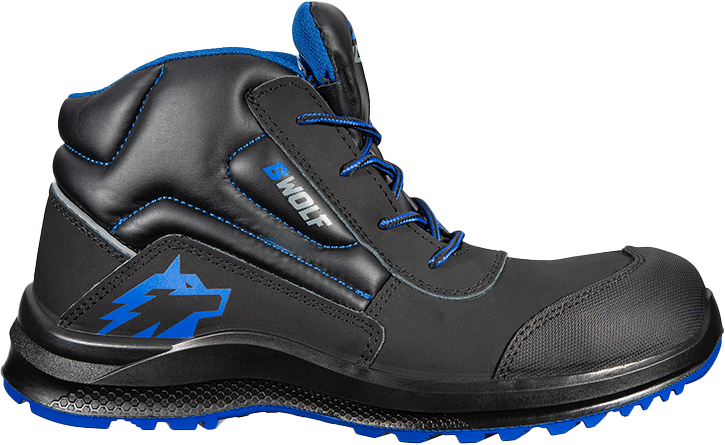
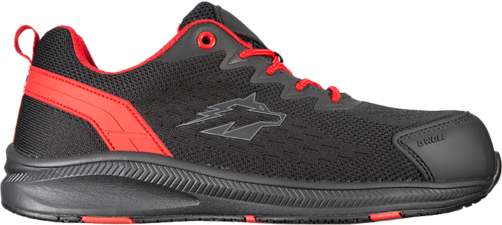
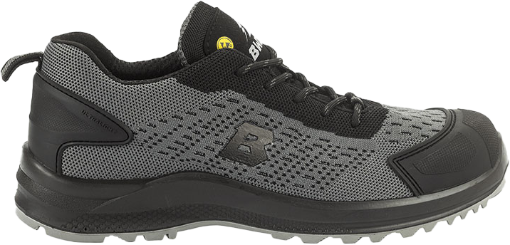
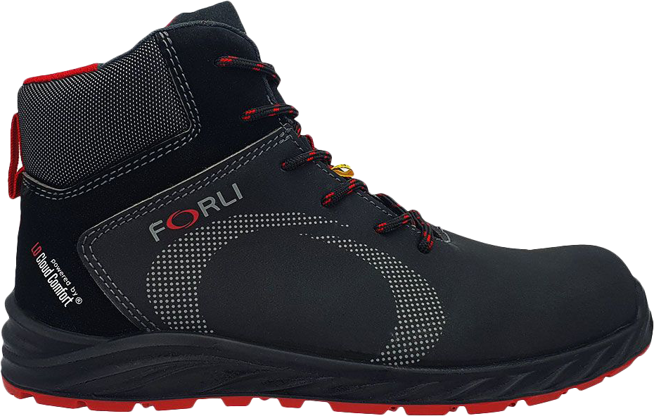
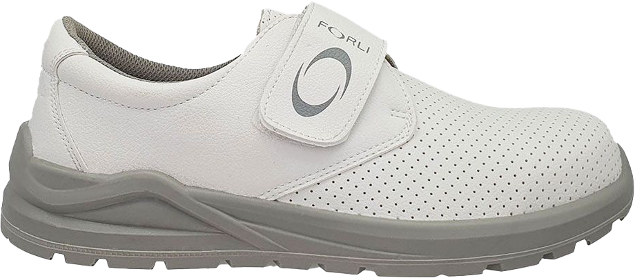
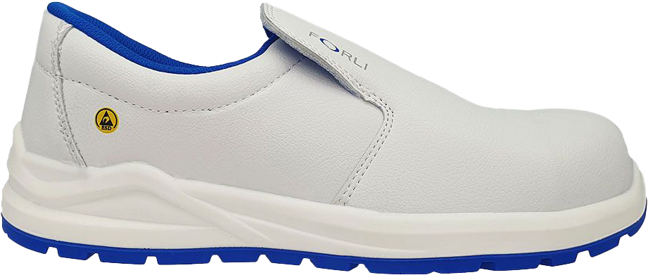
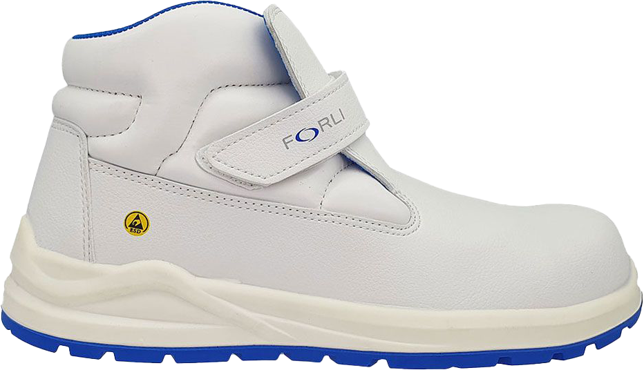
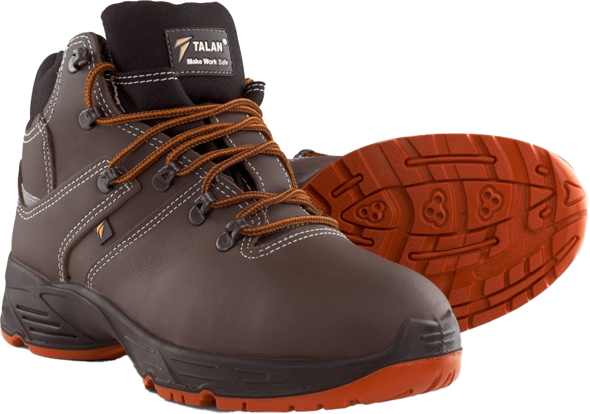
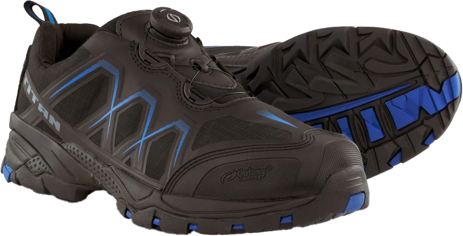
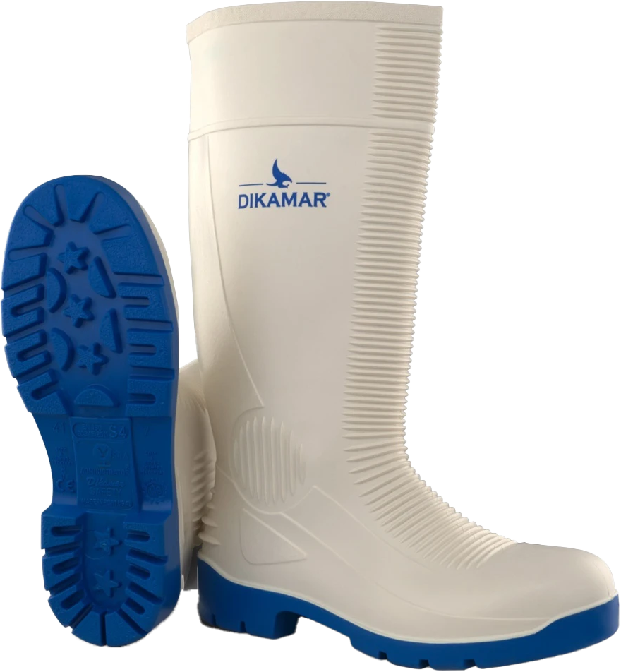

Εύρος μεγεθών: 36 - 48
Κατασκευαστής: BWOLF
Τύπος παπουτσιού: Μποτάκι
Επάνω µέρος παπουτσιού: Υδροαπωθητικό nubuck
Εξωτερική σόλα: PU/PU ∆ιπλής πυκνότητας
Προδιαγραφή προστασίας: S3 SRC
Καπάκι προστασίας δαχκτύλων: Συνθετικό
Πιστοποίηση: ΕΝ ISO 20345

Εύρος μεγεθών: 36 - 47
Κατασκευαστής: BWOLF
Τύπος παπουτσιού: Χαµηλό
Επάνω µέρος παπουτσιού: Ύφασµα
Εξωτερική σόλα: PU Μονής πυκνότητας
Προδιαγραφή προστασίας: S1
Καπάκι προστασίας δαχκτύλων: Συνθετικό
Πιστοποίηση: ΕΝ ISO 20345:2022

Εύρος μεγεθών: 36 - 48
Κατασκευαστής: BWOLF
Τύπος παπουτσιού: Χαµηλό
Επάνω µέρος παπουτσιού: Αναπνεύσιµο πλέγµα Flyknit
Εξωτερική σόλα: PU/PU ∆ιπλής πυκνότητας
Προδιαγραφή προστασίας: O1 SR FO ESD
Καπάκι προστασίας δαχκτύλων: TPU protectors
Πιστοποίηση: EN ISO 20347:2022

Εύρος μεγεθών: 35 - 50
Κατασκευαστής: FORLI
Τύπος παπουτσιού: Μποτάκι
Φάρδος παπουτσιού: Φαρδύ - W
Επάνω µέρος παπουτσιού: Mικροΐνες µε φινίρισµα Nubuck
Εξωτερική σόλα: PU/PU ∆ιπλής πυκνότητας
Προδιαγραφή προστασίας: S3
Καπάκι προστασίας δαχκτύλων: Fiber glass
Αντιδιατρητική σόλα: Αντιδιατρητικό ύφασµα
Πιστοποίηση: EN ISO 20345 : 2011

Εύρος μεγεθών: 35 - 48
Κατασκευαστής: FORLI
Τύπος παπουτσιού: Χαµηλό
Φάρδος παπουτσιού: Φαρδύ - W
Επάνω µέρος παπουτσιού: Μικροΐνες
Εξωτερική σόλα:PU Μονής πυκνότητας
Προδιαγραφή προστασίας: 01
Καπάκι προστασίας δαχκτύλων: ---
Αντιδιατρητική σόλα: ---
Πιστοποίηση: EN ISO 20347: 2012

Εύρος μεγεθών: 35 - 48
Κατασκευαστής: FORLI
Τύπος παπουτσιού: Χαµηλό
Φάρδος παπουτσιού: Φαρδύ - W
Επάνω µέρος παπουτσιού: Mικροΐνες
Εξωτερική σόλα: PU/PU ∆ιπλής πυκνότητας
Προδιαγραφή προστασίας: S2
Καπάκι προστασίας δαχκτύλων: Fiber glass
Αντιδιατρητική σόλα: ---
Πιστοποίηση: EN ISO 20345 : 2011

Εύρος μεγεθών: 35 - 48
Κατασκευαστής: FORLI
Τύπος παπουτσιού: Μποτάκι
Φάρδος παπουτσιού: Φαρδύ - W
Επάνω µέρος παπουτσιού: Μικροΐνες
Εξωτερική σόλα:PU/PU ∆ιπλής πυκνότητας
Προδιαγραφή προστασίας: S2
Καπάκι προστασίας δαχκτύλων: Fiber glass
Αντιδιατρητική σόλα: ---
Πιστοποίηση:EN ISO 20345 : 2011

Εύρος μεγεθών: 37 - 47
Κατασκευαστής: Talan
Τύπος παπουτσιού: Μποτάκι
Επάνω µέρος παπουτσιού: Υψηλής ποιότητας δέρµα Crazy Horse
Εξωτερική σόλα:Αντιολισθητική (SRC), PU δύο πυκνοτήτων
Προδιαγραφή προστασίας: S3
Καπάκι προστασίας δαχκτύλων:Συνθετικό, 200J
Πιστοποίηση:EN ISO 20345:2011

Εύρος μεγεθών: 37 - 49
Κατασκευαστής: Galaxy
Τύπος παπουτσιού: Χαµηλό
Επάνω µέρος παπουτσιού: TPU & Oxford υφασµάτινο πλέγµα
Εξωτερική σόλα:Αντιολισθητική (SRC), αντιστατική, EVA + καουτσούκ
Προδιαγραφή προστασίας: S1P
Καπάκι προστασίας δαχκτύλων:Συνθετικό, 200J
Πιστοποίηση:EN ISO 20345:2011

Εύρος μεγεθών: 36 - 47
Κατασκευαστής: Dikamar
Τύπος παπουτσιού: Μπότες
Προδιαγραφή προστασίας: S4
Καπάκι προστασίας δαχκτύλων: Ατσάλι, 200J
Πιστοποίηση:EN ISO 20345:2022